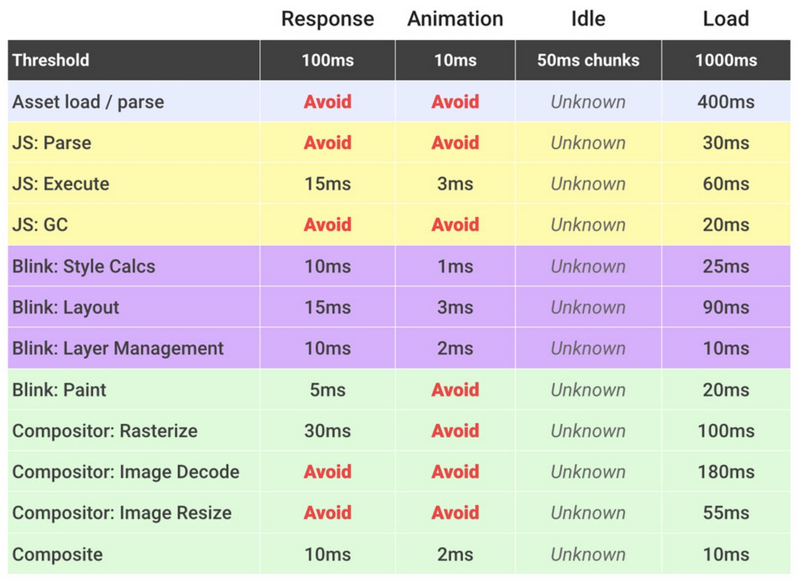

The Critical Rendering Path
Intros, 1 & 3
The goal is to run apps at 60 frames per second, and it's more than just JavaScritp to think about to get there.
A demo to help us experience judder and jank, later we'll learn to diagnose and solve those issues.
Judder
A discussion on why judder is bad, how it effects users experiences and choices, and how much users care about it (a lot).
60 fps
Reinforcement that the target for smooth scorlling and other animations is 60fps. Most devices run at 60fps and people notice when a when a frame is skipped.
This leaves us with 16 milliseconds to render each frame, but as the browser has some overheads to take care of, it's more realistic to aim for 10 to 12 milliseconds per frame.
What goes into a frame
This explains much of the previous course but in summary:
- Parse HTML in the browser means building the DOM
- Recalculate Styles means build the Render Tree
display: none are
not added to the Render Tree. Also, elements added by CSS such as
p:after {content: "some text"} will get added to
the Render Tree.
- Layout is when the browser calculates the sizes and positions of each element in the Render Tree.
- Paint is the process of rasterizing the document to be painted on the screen. This has many sub-steps and which can be viewed in Dev Tools, and is very expensive.
- Image Decode happens inside Paint and is the process of decoding and painting bitmaps to screen.
- Composite Layers is the process of handling multiple layers. This can be more efficient than painting the whole page to screen at once (especially for pages with animations or scrolling objects).
Take Away: Layout Process is complicated and it's always best to assume that the entire DOM is always in scope, even though the number of nodes effected may be different.
Layout and Paint
A typical frame pipeline for anything other than a static page looks like:
JavaScript > Style > Layout > Paint > Composite
The first step (javascript, although it could be CSS anim or Web Animation API) is any visual changes to the page. And it usually triggers all of the next steps to be performed. But we want to avoid triggering as a many and as often as possible.
If you use JavaScript to change a Layout property, such as the width of an element, then all the steps will be run.
If you change a Paint-only property, like font color or swapping an image, then the Layout step is skipped.
The 3rd way to make changes just making Composite changes. This can skip both Layout and Paint. Note that skipping Paint can be a huge benefit.
CSS Triggers
A list of all CSS triggering changes can be found here. Use this to ensure CSS changes trigger the least amount of work for the browser as possible.
Summary for Part 1: what we learned
- Why we care about hitting 60fps
- What browser work goes into making a frame
- Different property changes have different levels of impact
App Lifecycles
Picking and choosing your battles of when to achieve 60fps (and what other targets to have and when to aim for them).
RAIL
Response - Animation - Idle - Load
(could also be LIAR in a normal first pageload timeline).
- Load: 1 Second. Defer anything non-critical until after the page has loaded.
- Idle: 50 ms. Idle time usually comes in chunks of 50 ms which is the ideal time to add more stuff to the page.
- Animate: 10-12 ms. (60 fps) For scrolling and animations.
- Response: 100 ms. This is the response to any user inputs or actions, like clicks or keypresses.
See FLIP for super-fast animation tricks.
Remember that both Layout and Paint are severly effected by the number of elements that they have to be applied to. There is not an unlimited budget, even when code seems to work within the target timespan. Here's some budgeting guidelines:
The Dejudderification Toolbox
Chrome Dev Tools - Timeline
DevTools
A look at the timeline, with flame view,waterfall view 30/60 fps lines. Make selections in the frames area on top and use W, A, S and D to navigate (also mouse wheel).
The records are color coded; blue for Parse HTML (which is never really a bottleneck). Purple for Recalculate Style and Layout. Green for Paint and Composite, and Orange for JavaScipt execution.
In the flame view you can see which records are children of other records (on the line directly below) and which records lead to others (directly after on the same line).
The Details payne will show you more information about the record you have selected. They're all different depending on the type of record. For example JavaScript records will give you a link back to the line in the code where the JavaScript was called. The details payne can also give more detail about warning and errors.
Test all the Devices!
A timely reminder to test on actual devices because the desktop (and the device emulators on desktop) will far out-perform real devices and give you a false impression of a non-performant app.
Testing Strategies
Make sure you're collecting clean data.
- Quit any other apps
- Open an incognito window
- Focus on cause of bottlenecks, not the symptoms
- Measure first, then optimize
That was basically it, just a deeper dive into DevTools.
JavaScript Performance
A look at the common causes of jank. Find, fix and text with DevTools. Starting with JavaScript.